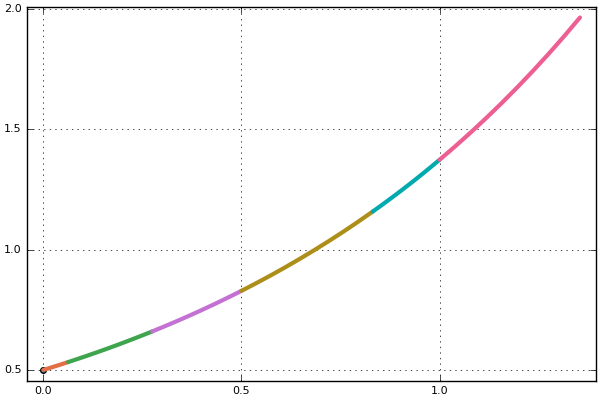

Integrator Interface
The integrator interface gives one the ability to interactively step through the numerical solving of a differential equation. Through this interface, one can easily monitor results, modify the problem during a run, and dynamically continue solving as one sees fit.
Initialization and Stepping
To initialize an integrator, use the syntax:
integrator = init(prob, alg; kwargs...)The keyword args which are accepted are the same as the solver options used by solve and the returned value is an integrator which satisfies typeof(integrator)<:DEIntegrator. One can manually choose to step via the step! command:
step!(integrator)which will take one successful step. Additionally:
step!(integrator, dt, false)passing a dt will make the integrator continue to step until at least integrator.t+dt, and passing true as the third argument will add a tstop to force it to step up to integrator.t+dt, exactly.
To check whether the integration step was successful, you can call check_error(integrator) which returns one of the return codes.
This type also implements an iterator interface, so one can step n times (or to the last tstop) using the take iterator:
for i in take(integrator, n)
endOne can loop to the end by using solve!(integrator) or using the iterator interface:
for i in integrator
endIn addition, you can monitor the solution by reading the current u / t off the integrator on each step:
for i in integrator
u, t = integrator.u, integrator.t
@show u, t
endor view both the previous and current endpoints of each accepted step:
for i in integrator
uprev, tprev = integrator.uprev, integrator.tprev
u, t = integrator.u, integrator.t
@show tprev, t
end(The old tuples / intervals / TimeChoiceIterator helper iterators were removed in SciMLBase v3 — iterate the integrator directly and read the field you want on each step.)
Lastly, one can dynamically control the “endpoint”. The initialization simply makes prob.tspan[2] the last value of tstop, and many of the iterators are made to stop at the final tstop value. However, step! will always take a step, and one can dynamically add new values of tstops by modifying the variable in the options field: add_tstop!(integrator,new_t).
Finally, to solve to the last tstop, call solve!(integrator). Doing init and then solve! is equivalent to solve.
SciMLBase.check_error — Function
check_error(integrator)Inspect integrator and return the ReturnCode that describes whether integration may continue.
The common implementation preserves an existing terminal return code and checks for a NaN step size, iteration limits, a step size at or below dtmin, a user-supplied instability predicate, and failed nonlinear steps. It does not mutate integrator.sol.retcode; use check_error! when the solution must be updated. Concrete integrators may specialize the checks while preserving the return-code contract.
Diagnostics for detected failures are emitted through report_integrator_failure, which the solver stack implements; this function only performs detection.
SciMLBase.check_error! — Function
check_error!(integrator)Run check_error, store the resulting code in integrator.sol.retcode, and return that code.
When the code is not ReturnCode.Success, the common implementation also calls the solver's postamble! hook so pending bookkeeping and finalization are performed before the solve exits. A successful check updates the return code but does not finalize the integrator.
Handling Integrators
The integrator<:DEIntegrator type holds all the information for the intermediate solution of the differential equation. Useful fields are:
t- time of the proposed stepu- value at the proposed stepp- user-provided dataopts- common solver optionsalg- the algorithm associated with the solutionf- the function being solvedsol- the current state of the solutiontprev- the last timepointuprev- the value at the last timepointtdir- the sign for the direction of time
The function f is usually a wrapper of the function provided when creating the specific problem. For example, when solving an ODEProblem, f will be an ODEFunction. To access the right-hand side function provided by the user when creating the ODEProblem, please use SciMLBase.unwrapped_f(integrator.f.f).
The p is the (parameter) data which is provided by the user as a keyword arg in init. opts holds all the common solver options, and can be mutated to change the solver characteristics. For example, to modify the absolute tolerance for the future timesteps, one can do:
integrator.opts.abstol = 1.0e-9The sol field holds the current solution. This current solution includes the interpolation function if available, and thus integrator.sol(t) lets one interpolate efficiently over the whole current solution. Additionally, a “current interval interpolation function” is provided on the integrator type via integrator(t,deriv::Type=Val{0};idxs=nothing,continuity=:left). This uses only the solver information from the interval [tprev,t] to compute the interpolation, and is allowed to extrapolate beyond that interval.
Note about mutating
Be cautious: one should not directly mutate the t and u fields of the integrator. Doing so will destroy the accuracy of the interpolator and can harm certain algorithms. Instead, if one wants to introduce discontinuous changes, one should use the callbacks. Modifications within a callback affect! surrounded by saves provides an error-free handling of the discontinuity.
As low-level alternative to the callbacks, one can use set_t!, set_u! and set_ut! to mutate integrator states. Note that certain integrators may not have efficient ways to modify u and t. In such case, set_*! are as inefficient as reinit!.
SciMLBase.set_t! — Function
set_t!(integrator::DEIntegrator, t)Set the current time of integrator to t.
set_t! is the direct time-mutation hook used by callbacks and generic integrator utilities. It changes the independent variable without implying that the state should be interpolated to the new time.
Interface rules
- Implementations must keep
integrator.t, method-specific time caches, and any time-dependent controller state consistent with the new time. set_t!should not changeintegrator.uexcept for solver-specific bookkeeping required to keep an already-mutated state valid.- Use
change_t_via_interpolation!when moving totshould also recomputeufrom the method's interpolation. - If changing time invalidates interpolation, error estimates, or dense output caches, the implementation must refresh them or require callers to follow with
reeval_internals_due_to_modification!.
SciMLBase.set_u! — Function
set_u!(integrator::DEIntegrator, u)
set_u!(integrator::DEIntegrator, sym, val)Set the current state of integrator.
The two-argument form replaces the full state and must be implemented by concrete integrators that support direct state mutation. The three-argument form is the generic symbolic-state update path: it verifies that sym is a state variable, writes val into integrator.u, and marks a derivative discontinuity. Parameter updates should use integrator.ps[sym] or SymbolicIndexingInterface parameter setters instead of set_u!.
Interface rules
- Full-state updates must keep
integrator.uand any solver-owned state caches that mirroruconsistent. - Symbolic updates are only for state variables. They must reject parameters and unknown symbols rather than silently adding new state.
- State mutation is treated as a derivative discontinuity because cached derivatives, interpolation data, and step controllers may no longer describe the current state.
- Solvers that need additional work after a state change should implement
reeval_internals_due_to_modification!and document when callbacks or generic code must call it.
SciMLBase.set_ut! — Function
set_ut!(integrator::DEIntegrator, u, t)Set the current state and time of integrator.
The fallback calls set_u! and then set_t!, so concrete integrators can specialize either lower-level mutation hook or overload set_ut! directly when state/time changes must be applied atomically.
Interface rules
set_ut!is the preferred hook when a callback or initialization routine changes state and time together.- The default ordering is state first, then time. Integrators whose caches require a different ordering must overload
set_ut!. - After returning,
state_values(integrator)andcurrent_time(integrator)should observe the updateduandt.
Integrator vs Solution
The integrator and the solution have very different actions because they have very different meanings. The typeof(sol) <: DESolution type is a type with history: it stores all the (requested) timepoints and interpolates/acts using the values closest in time. On the other hand, the typeof(integrator)<:DEIntegrator type is a local object. It only knows the times of the interval it currently spans, the current caches and values, and the current state of the solver (the current options, tolerances, etc.). These serve very different purposes:
- The
integrator's interpolation can extrapolate, both forward and backward in time. This is used to estimate events and is internally used for predictions. - The
integratoris fully mutable upon iteration. This means that every time an iterator affect is used, it will take timesteps from the current time. This means thatfirst(integrator)!=first(integrator)since theintegratorwill step once to evaluate the left and then step once more (not backtracking). This allows the iterator to keep dynamically stepping, though one should note that it may violate some immutability assumptions commonly made about iterators.
If one wants the solution object, then one can find it in integrator.sol.
Function Interface
In addition to the type interface, a function interface is provided which allows for safe modifications of the integrator type, and allows for uniform usage throughout the ecosystem (for packages/algorithms which implement the functions). The following functions make up the interface:
Saving Controls
SciMLBase.savevalues! — Function
savevalues!(
integrator::DEIntegrator,
force_save = false
) -> Tuple{Bool, Bool}Try to save the state and time variables at the current time point, or the saveat point by using interpolation when appropriate. It returns a tuple that is (saved, savedexactly). If savevalues! saved value, then saved is true, and if savevalues! saved at the current time point, then savedexactly is true.
The saving priority/order is as follows:
save_onsaveatforce_savesave_everystep
Caches
SciMLBase.get_tmp_cache — Function
get_tmp_cache(i::DEIntegrator)Return temporary work arrays owned by the integrator.
The returned tuple is intended for callbacks and integrator-interface code that needs non-allocating scratch storage. Callers may mutate these arrays during the current operation, but must not store them for later use or assume a fixed tuple length across algorithms.
SciMLBase.full_cache — Function
full_cache(i::DEIntegrator)Return an iterator over all state-sized cache arrays managed by the method.
full_cache is the broad cache interface used by generic resizing, adaptation, and callback utilities that need to keep every state-shaped cache synchronized. Concrete solvers should include user and non-user caches whose leading state dimension must track integrator.u.
Stepping Controls
SciMLBase.derivative_discontinuity! — Function
derivative_discontinuity!(i::DEIntegrator, bool)Record whether a callback or direct integrator mutation introduced a derivative discontinuity.
The flag describes whether f(u, p, t) may have changed discontinuously because u, p, t, or the definition of f changed. Solvers use this to decide whether to recompute derivatives, interpolation data, FSAL caches, or Jacobians before the next step. Callback code should leave the default discontinuity behavior in place after state-changing effects, and may call derivative_discontinuity!(integrator, false) only when it did not change the state, parameters, time, or dynamics.
derivative_discontinuity!(integrator::DDEIntegrator, bool::Bool)Flag whether the current callback introduced a derivative discontinuity. Behaves identically to the ODEIntegrator method, including the order-independent, any-true-wins merge across simultaneous callbacks; see that method for details.
derivative_discontinuity!(integrator::ODEIntegrator, bool::Bool)Flag whether the current callback introduced a derivative discontinuity (a change to u, p, t, or f that makes f(u, p, t) discontinuous). A true triggers extra work at the start of the next step (FSAL re-evaluation, Jacobian recomputation, extrapolant reset); a false lets the integrator skip it. The default when a callback fires but does not call this is true, the conservative choice.
When several callbacks run on the same step (multiple DiscreteCallbacks, or simultaneous events in a VectorContinuousCallback), the outcome is order independent and any-true-wins:
- if any callback flags
true, the step is treated as discontinuous, even if other callbacks flagfalseand even if afalsecallback runs last; - only if every callback that spoke flagged
false(and none flaggedtrue) is the recomputation skipped; - if no callback calls this at all, the conservative default (
true) is kept.
A callback may therefore safely call derivative_discontinuity!(integrator, false) without having to account for what sibling callbacks did. Within a single callback the last call wins.
SciMLBase.get_proposed_dt — Function
get_proposed_dt(i::DEIntegrator)Return the signed step-size increment currently proposed for the next step.
For adaptive methods this is the controller proposal. For fixed-step methods it is normally the configured step size. The actual next step may be shortened to land on a tstop, rejected and retried, or otherwise adjusted by the solver, so this value is a proposal rather than a promise about the next accepted time.
SciMLBase.set_proposed_dt! — Function
set_proposed_dt!(i::DEIntegrator, dt)
set_proposed_dt!(i::DEIntegrator, i2::DEIntegrator)Set the signed step-size proposal used for the next step.
The scalar form updates every step-size field that the concrete solver requires to honor a new proposal. It does not bypass error control, rejection, or tstop handling, and therefore does not guarantee that the next accepted step has exactly that size.
The two-integrator form synchronizes the first integrator's time-stepping state with the second. Adaptive implementations should copy the controller history or other state needed to reproduce the proposal, rather than only copying one dt field. This form is optional for integrators that cannot share compatible controller state.
SciMLBase.terminate! — Function
terminate!(i::DEIntegrator[, retcode = :Terminated])Terminates the integrator by emptying tstops. This can be used in events and callbacks to immediately end the solution process. Optionally, retcode may be specified (see: Return Codes (RetCodes)).
SciMLBase.change_t_via_interpolation! — Function
change_t_via_interpolation!(
integrator::DEIntegrator, t,
modify_save_endpoint = Val{false}, reinitialize_alg = nothing
)Move the integrator to time t using the method's local interpolation.
Concrete solvers should update integrator.t, integrator.u, interpolation state, and any dependent caches consistently. If the current endpoint has already been saved, modify_save_endpoint controls whether the saved endpoint in integrator.sol is rewritten as well. reinitialize_alg is available for methods that must rerun initialization after the time/state change.
SciMLBase.add_tstop! — Function
add_tstop!(i::DEIntegrator, t)Schedule a future stopping time at the physical time t.
An integrator must not accept a stop behind its current time in the direction of integration. A tstop constrains stepping so the integrator reaches t exactly when the method supports step-size changes or interpolation. It does not by itself request that the solution be saved there; use add_saveat! or the solver's saving options for output.
Implementations commonly store tstops as direction-normalized priority keys integrator.tdir * t. The companion queue accessors expose those keys so generic stepping code can compare them with integrator.tdir * integrator.t in both forward and reverse integration.
SciMLBase.has_tstop — Function
has_tstop(i::DEIntegrator)Return whether the integrator has any pending stopping times.
This query must be consistent with first_tstop and pop_tstop!: when it returns false, neither queue accessor may be called until another stop is added.
SciMLBase.first_tstop — Function
first_tstop(i::DEIntegrator)Return the next pending stopping-time key without removing it.
Stopping times are ordered in the direction of integration. The returned value is direction-normalized as integrator.tdir * tstop, matching the queue key used by generic solver and callback code. Recover the physical time as integrator.tdir * first_tstop(integrator) when integrator.tdir is 1 or -1. Calling this on an empty queue is invalid; check has_tstop first.
SciMLBase.pop_tstop! — Function
pop_tstop!(i::DEIntegrator)Remove and return the next pending stopping-time key.
The value and ordering follow first_tstop: this removes the earliest stop in the direction of integration, not the most recently inserted stop, and returns its direction-normalized queue key. Calling this on an empty queue is invalid; check has_tstop first.
SciMLBase.add_saveat! — Function
add_saveat!(i::DEIntegrator, t)Schedule solution output at the future physical time t.
An integrator must not accept a save point behind its current time in the direction of integration. saveat normally uses interpolation when t lies inside a step and therefore does not force the integrator to step exactly to t. Add a matching add_tstop! when an exact step endpoint is also required. Saving still follows the solver's save_on, save_idxs, and related output options.
Resizing
Base.resize! — Function
resize!(integrator::DEIntegrator, k::Int)Resize the state dimension of an integrator to length k.
Concrete integrators that support dynamic state sizes should resize u, saved state caches, user-facing caches, and any algorithm-specific non-user caches so future steps see a consistent state layout. Shrinking removes trailing state entries; growing appends solver-defined blank/default values.
Base.deleteat! — Function
deleteat!(integrator::DEIntegrator, idxs)Delete state components from a dynamic-size integrator.
Implementations should remove the selected entries from integrator.u, saved state caches, and any dependent non-user caches. Symbolic indexing metadata is assumed to remain valid only when the concrete solver documents support for dynamic state selection.
SciMLBase.addat! — Function
addat!(integrator::DEIntegrator, idxs, val)Insert state components into a dynamic-size integrator.
idxs must describe contiguous positions. Implementations should insert val or solver-defined defaults into integrator.u, saved state caches, and any dependent non-user caches so subsequent stepping uses the new state dimension.
SciMLBase.resize_non_user_cache! — Function
resize_non_user_cache!(integrator::DEIntegrator, k::Int)Resizes the non-user facing caches to be compatible with a DE of size k. This includes resizing Jacobian caches.
In many cases, resize! simply resizes full_cache variables and then calls this function. This finer control is required for some AbstractArray operations.
SciMLBase.deleteat_non_user_cache! — Function
deleteat_non_user_cache!(integrator::DEIntegrator, idxs)deleteat!s the non-user facing caches at indices idxs. This includes resizing Jacobian caches.
In many cases, deleteat! simply deleteat!s full_cache variables and then calls this function. This finer control is required for some AbstractArray operations.
SciMLBase.addat_non_user_cache! — Function
addat_non_user_cache!(i::DEIntegrator, idxs)addat!s the non-user facing caches at indices idxs. This includes resizing Jacobian caches.
In many cases, addat! simply addat!s full_cache variables and then calls this function. This finer control is required for some AbstractArray operations.
Reinitialization
SciMLBase.reinit! — Function
reinit!(integrator::DEIntegrator, args...; kwargs...)The reinit function lets you restart the integration at a new value.
Arguments
u0: Value ofuto start at. Default value isintegrator.sol.prob.u0
Keyword Arguments
t0: Starting timepoint. Default value isintegrator.sol.prob.tspan[1]tf: Ending timepoint. Default value isintegrator.sol.prob.tspan[2]erase_sol=true: Whether to start with no other values in the solution, or keep the previous solution.tstops,d_discontinuities, &saveat: Cache where these are stored. Default is the original cache.reset_dt: Set whether to reset the current value ofdtusing the automaticdtdetermination algorithm. Default is(integrator.dtcache == zero(integrator.dt)) && integrator.opts.adaptivereinit_callbacks: Set whether to run the callback initializations again (andinitialize_saveis for that). Default istrue.reinit_cache: Set whether to re-run the cache initialization function (i.e. resetting FSAL, not allocating vectors) which should usually be true for correctness. Default istrue.
Additionally, once can access auto_dt_reset! which will run the auto dt initialization algorithm.
reinit!(integrator::DDEIntegrator[, u0 = integrator.sol.prob.u0;
t0 = integrator.sol.prob.tspan[1],
tf = integrator.sol.prob.tspan[2],
erase_sol = true,
kwargs...])Reinitialize integrator with (optionally) different initial state u0, different integration interval from t0 to tf, and erased solution if erase_sol = true.
SciMLBase.auto_dt_reset! — Function
auto_dt_reset!(integrator::DEIntegrator)Recompute the integrator's initial step size from its current state.
Concrete solvers should apply the same automatic step-size selection used during init, including the current state, time, parameters, tolerances, integration direction, and method-specific limits. They must update the active step size and any proposal state needed by the next step. This operation may evaluate the problem function and increment solver statistics. Its return value is not part of the interface.
Misc
SciMLBase.get_du — Function
get_du(i::DEIntegrator)Return the derivative represented by the integrator at its current (u, p, t).
An implementation may return an internal derivative cache or evaluate the problem function when no valid cache exists. Treat the returned value as read-only because mutating an aliased cache can corrupt later steps. Use get_du! when caller-owned output storage is required.
This operation is optional when a derivative is not meaningful or available. For example, discrete steppers have no continuous derivative, and some DAE integrators cannot provide one before their first initialized step. Direct changes to u, p, or t must be reported through the integrator mutation interface so a cached derivative is refreshed before it is queried.
SciMLBase.get_du! — Function
get_du!(out, i::DEIntegrator)Write the derivative represented by the integrator at its current (u, p, t) into caller-owned out.
out must have a shape and element type compatible with the derivative. An implementation may copy a valid internal cache or evaluate the problem function directly. Use the contents of out after the call; concrete methods are not required to return out. The same derivative-availability restrictions as get_du apply.
Note that not all these functions will be implemented for every algorithm. Some have hard limitations. For example, Sundials.jl cannot resize problems. When a function is not limited, an error will be thrown.
Additional Options
The following options can additionally be specified in init (or be mutated in the opts) for further control of the integrator:
advance_to_tstop: This makesstep!continue to the next value intstop.stop_at_next_tstop: This forces the iterators to stop at the next value oftstop.
For example, if one wants to iterate but only stop at specific values, one can choose:
integrator = DE.init(
prob, DE.Tsit5(); dt = 1 // 2^4, tstops = [0.5], advance_to_tstop = true
)
for i in integrator
@test integrator.t ∈ [0.5, 1.0]
endwhich will only enter the loop body at the values in tstops (here, prob.tspan[2]==1.0 and thus there are two values of tstops which are hit). Additionally, one can solve! only to 0.5 via:
integrator = DE.init(prob, DE.Tsit5(); dt = 1 // 2^(4), tstops = [0.5])
integrator.opts.stop_at_next_tstop = true
solve!(integrator)Plot Recipe
Like the DESolution type, a plot recipe is provided for the DEIntegrator type. Since the DEIntegrator type is a local state type on the current interval, plot(integrator) returns the solution on the current interval. The same options for the plot recipe are provided as for sol, meaning one can choose variables via the idxs keyword argument, or change the plotdensity / turn on/off denseplot.
Additionally, since the integrator is an iterator, this can be used in the Plots.jl animate command to iteratively build an animation of the solution while solving the differential equation.
For an example of manually chaining together the iterator interface and plotting, one should try the following:
import DifferentialEquations as DE, DiffEqProblemLibrary, Plots
# Linear ODE which starts at 0.5 and solves from t=0.0 to t=1.0
prob = DE.ODEProblem((u, p, t) -> 1.01u, 0.5, (0.0, 1.0))
import Plots
integrator = DE.init(prob, DE.Tsit5(); dt = 1 // 2^(4), tstops = [0.5])
pyplot(show = true)
Plots.plot(integrator)
for i in integrator
display(Plots.plot!(integrator, idxs = (0, 1), legend = false))
end
DE.step!(integrator);
Plots.plot!(integrator, idxs = (0, 1), legend = false);
savefig("iteratorplot.png")